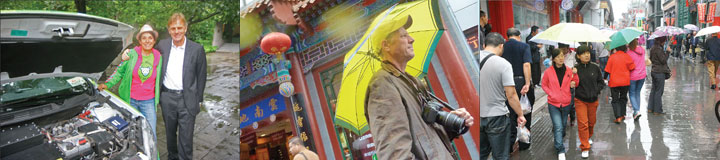
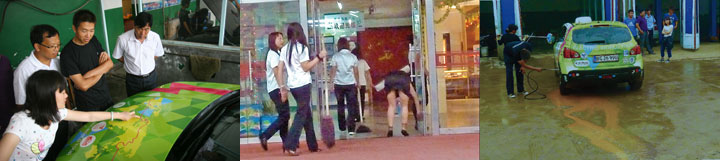

Langs landevejen i Hebei-provinsen ligger værksteder og større og mindre industri. Bag den første husrække dyrkes majs bomuld, grøntsager og chilli! Kineserne er myreflittige, alle arbejder og intet er for småt, for snavset eller for kedeligt. Duftoplevelserne er uhyre afvekslende. Et øjeblik er det eddikesyre, skosværte, papir eller gylle, et øjeblik efter er det brændt plastic, svovl og mandler. Til frokost spiser vi de bedste rejer nogensinde. Om aftenen ankommer vi til vores hotel i Shandong-provinsen lige ved solnedgang. Nu ser man ikke mere den tågede, grå luft, kineserne går ud for at spise, gaderne syder af aktivitet og husene illumineres i stærke farver.
Langs landevejen i Hebei-provinsen ligger værksteder og større og mindre industri. Bag den første husrække dyrkes majs bomuld, grøntsager og chilli! Kineserne er myreflittige, alle arbejder og intet er for småt, for snavset eller for kedeligt. Duftoplevelserne er uhyre afvekslende. Et øjeblik er det eddikesyre, skosværte, papir eller gylle, et øjeblik efter er det brændt plastic, svovl og mandler. Til frokost spiser vi de bedste rejer nogensinde. Om aftenen ankommer vi til vores hotel i Shandong-provinsen lige ved solnedgang. Nu ser man ikke mere den tågede, grå luft, kineserne går ud for at spise, gaderne syder af aktivitet og husene illumineres i stærke farver.
 Vi var ved at fotografere Grønne da den pludselig ikke kunne bremse. Muligvis en løs forbindelse? Det er jo altid noget skidt, men efter at vi havde checket alle sikringer og banket på relæerne virkede bremsen heldigvis igen. På landevejen udenfor Beijing kom vi ind i et område hvor de dyrkede kæmpestore søde vindruer. Vi købte et kilo som straks blev spist. Længere fremme blev der produceret store mængder træplader og pap. I Daicheng, hvor de laver thermoflasker, fandt vi et billigt hotel. Grønne fik en ladeledning ud ad hotelvinduet, og vi pindede en dejlig kinesisk middag i os.
Vi var ved at fotografere Grønne da den pludselig ikke kunne bremse. Muligvis en løs forbindelse? Det er jo altid noget skidt, men efter at vi havde checket alle sikringer og banket på relæerne virkede bremsen heldigvis igen. På landevejen udenfor Beijing kom vi ind i et område hvor de dyrkede kæmpestore søde vindruer. Vi købte et kilo som straks blev spist. Længere fremme blev der produceret store mængder træplader og pap. I Daicheng, hvor de laver thermoflasker, fandt vi et billigt hotel. Grønne fik en ladeledning ud ad hotelvinduet, og vi pindede en dejlig kinesisk middag i os.
 Det mest berømte hus i Beijing er et 600 år gammelt træhus. Det vidunderlige runde Himlens Tempel ligger næsten skjult i en stor park af lave. gamle cedertræer. Glasserede tagsten, gulddrager og rødlakerede søjler. Stort men ikke enormt. Ikke en katedral der stræber opad, men den bygning kejseren selv havde brug for når han en gang om året foretog ritualerne for at sikre god høst. Kineserne forekommer mig pragmatiske og det har Ming-kejseren åbenbart også været. Kinesiske turister fra det store land myldrer forbi og fotograferer hinanden.
Det mest berømte hus i Beijing er et 600 år gammelt træhus. Det vidunderlige runde Himlens Tempel ligger næsten skjult i en stor park af lave. gamle cedertræer. Glasserede tagsten, gulddrager og rødlakerede søjler. Stort men ikke enormt. Ikke en katedral der stræber opad, men den bygning kejseren selv havde brug for når han en gang om året foretog ritualerne for at sikre god høst. Kineserne forekommer mig pragmatiske og det har Ming-kejseren åbenbart også været. Kinesiske turister fra det store land myldrer forbi og fotograferer hinanden.
Hjalte
 Den blå bil kunne ikke komme ud af Rusland uden mig. Så jeg fløj fra Beijing hen til Blå som stod helt uskadt under en pressenning nær grænsen til Finland. Det tog mig kun et øjeblik at følge Blå gennem tolden. Da Blå nu var kommet ind i EU og forøvrigt var i gode hænder fløj jeg tilbage til Beijing. Blå vil blive kørt til sin fødeby Sakskøbing for at få et grundigt eftersyn. Den vil senere køre sammen med os gennem USA, toptunet.
Den blå bil kunne ikke komme ud af Rusland uden mig. Så jeg fløj fra Beijing hen til Blå som stod helt uskadt under en pressenning nær grænsen til Finland. Det tog mig kun et øjeblik at følge Blå gennem tolden. Da Blå nu var kommet ind i EU og forøvrigt var i gode hænder fløj jeg tilbage til Beijing. Blå vil blive kørt til sin fødeby Sakskøbing for at få et grundigt eftersyn. Den vil senere køre sammen med os gennem USA, toptunet.
Nina
Toget måtte køre frem og bakke for at komme op igennem den vilde dal til den store mur. Hjalte ville gå op til det højeste punkt, og Serena og jeg tog svævebanen. Det viste sig at Hjalte var gået op til venstre, imens vi andre svævede op til højre, så vi fandt ikke hinanden før da vi kom ned igen. Det var imponerende at se hvordan muren slyngede sig hen over de grønne bjergrygge. Muren var voldsomt restaureret, det så ud som om hver eneste sten var skiftet ud. Den overfyldte bus vi kørte hjem med sad helt planmæssigt fast i en trafikprop. Konduktricen råbte. Både børn og voksne blev trætte og søvnige og nogle stod af for at tage undergrundsbanen.
Nina
Beijing var engang kendt for sine mange cykler. “Det må være meget længe siden”, siger vores guide. Nu er der næsten ingen tilbage. Kineserne har fået biler. Kun få kinesere bruger cykler, og da helst de elektriske. Resultatet er at det tager meget lang tid at komme frem i myldretiden hvor trafikken går i stå. Vi prøver at køre med undergrundsbanen, men først er der langt til stationen, og da vi står af er der stadig så langt til vores destination at vi må finde en taxi. I en gade med restauranter er der hængt lige så mange røde lamper op som der er reklameflag i en dansk provinsby. Længere nede ad gaden sælges røgelse til et buddhiske tempel.
Nina
 Efter frokost travede vi på vores nedslidte fødder til Den Himmelske Freds Plads, Tian'anmen. Pladsen var stor men der foregik ikke andet end at kineserne fotograferede hinanden fordi de nu stod på den centrale plads i Beijing. Ved pladsen lå historiske bygninger, nationalmuseet, parlamentet og et mausolæum med Mao´s balsamerede lig og endnu hænger hans portræt over porten til kejserpaladset. Ellers møder man ham kun på pengesedlerne. Kort derfra lå Beijings fineste forretningsgade hvor vi gik på indkøb i en boghandel som fyldte et helt hus. På hjemvejen spiste vi kylling, fisk, bønnenudler og salat med fjordrejer.
Efter frokost travede vi på vores nedslidte fødder til Den Himmelske Freds Plads, Tian'anmen. Pladsen var stor men der foregik ikke andet end at kineserne fotograferede hinanden fordi de nu stod på den centrale plads i Beijing. Ved pladsen lå historiske bygninger, nationalmuseet, parlamentet og et mausolæum med Mao´s balsamerede lig og endnu hænger hans portræt over porten til kejserpaladset. Ellers møder man ham kun på pengesedlerne. Kort derfra lå Beijings fineste forretningsgade hvor vi gik på indkøb i en boghandel som fyldte et helt hus. På hjemvejen spiste vi kylling, fisk, bønnenudler og salat med fjordrejer.
Nina
 Grønne blev stående ved hotellet. Vi kørte i taxi hen til en restaurant hvor vi spiste en overdådig frokost sammen med Simon fra Danmark og hans kinesiske kone. Bagefter gik vi med dem hen til en lille butik hvor de solgte kopier af gamle postkort. Vi befandt os i turistkvarteret lige ved siden at det store trommetårn hvorfra trommerne siden 1400-tallet har indvarslet aften og at byportene blev lukket. Hjalte, jeg og Serena kom så betids op i tårnet at vi så trommerne komme ind og tromme. Fra trommetårnet vandrede vi hjemad gennem den forbudte by indtil det blev mørkt, og fødderne var slidt op.
Grønne blev stående ved hotellet. Vi kørte i taxi hen til en restaurant hvor vi spiste en overdådig frokost sammen med Simon fra Danmark og hans kinesiske kone. Bagefter gik vi med dem hen til en lille butik hvor de solgte kopier af gamle postkort. Vi befandt os i turistkvarteret lige ved siden at det store trommetårn hvorfra trommerne siden 1400-tallet har indvarslet aften og at byportene blev lukket. Hjalte, jeg og Serena kom så betids op i tårnet at vi så trommerne komme ind og tromme. Fra trommetårnet vandrede vi hjemad gennem den forbudte by indtil det blev mørkt, og fødderne var slidt op.
Nina
Vi kørte fra hotellet to timer i forvejen. Med hjælp fra Serenas GPS nåede vi frem til den danske ambassade til tiden, trods morgen-myldretiden. Vi stillede Grønne i gården, og en journalist fra Beijings bedste netavis lavede et interwiew med os. Bagefter kom ambassadøren og energi-handels-rådgiveren ud til Grønne som gav en lille opvisning. Vi var enige om at elbilerne har en stor fremtid i Kina. Jeg tænker at elbiler kan løse bilos-problemet, men ikke trafikpropperne. Når Beijings fem ringveje allerede er tyve baner brede hvad gør man så? Hvis man udvider alle vejene til 40 baner er der plads til flere biler og færre huse. Laver man vejene 80 baner brede vil der ingen huse være tilbage.
Jeg, Grønne var ikke blevet ordentlig vasket siden Rusland. Nina og Hjalte tog straks brusebad da de kom ind i Kina efter otte dage uden bad i Mongoliet. Jeg måtte derimod vente til i morges hvor de omsider fandt et bilvaskeri. Fem folk indsæbede, spulede, pudsede og støvsugede mig. Efter det første bad sagde de at jeg hellere måtte få et bad til. Bagefter solede jeg mig i de beundrende blikke, selv om det var begyndt at regne. Nu smiler jeg til alle de rengøringsfolk jeg ser. Jeg havde haft så meget mudder med fra Mongoliet at der lå et lille bjerg og en sø tilbage da jeg kørte videre.
Hilsen fra Grønne.